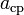
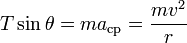
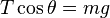
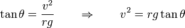
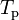
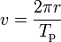
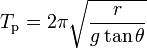
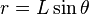
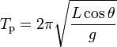

El péndulo cónico está constituido por un cuerpo pesado de pequeñas dimensiones (puntual, idealmente) suspendido de un punto fijo mediante un hilo inextensible y de masa despreciable. Su construcción es la misma que la de un péndulo simple, pero, a diferencia de éste, el péndulo cónico no oscila, sino que la masa pendular describe una trayectoria circular en un plano horizontal con aceleración constante. Su nombre proviene del hecho de que el hilo traza una superficie cónica.
El péndulo cónico es un caso particular del péndulo esférico. En concreto es un péndulo esférico en el que el vector velocidad (inicial) es perpendicular al plano determinado por la vertical y el hilo.
El científico inglés Robert Hooke fue el primero en estudiar las características de este péndulo, en 1660.
Consideremos un péndulo cónico consistente en una pequeña esfera de masa m que se mueve sin fricción en una circunferencia horizontal con una celeridad constante v, suspendida de un hilo de longitud L que forma un ángulo constante θ con la vertical.
Sobre la masa m actúan dos fuerzas: su propio peso, mg, y la tensión del hilo, T.
La componente horizontal de la tensión del hilo proporciona la aceleración centrípeta, , asociada con el movimiento circular. La componente vertical de la tensión se compensa exactamente con el peso de la masa m. La aplicación de la segunda ley de Newton en las direcciones horizontal y vertical nos permite escribir (1) y (2):


Dividiendo miembro a miembros estas dos ecuaciones, eliminamos T y m, resultando (3):

Puesto que la celeridad v es constante, puede expresarse en función del tiempo  requerido para realizar una revolución completa o periodo de revolución (4),

y sustituyendo en la ecuación (3), después de fáciles operaciones, obtenemos (5):

En la ejecución práctica de la experiencia, r varía y no es tan fácil de medir como la longitud constante L del hilo. Recurriendo a la relación trigonométria entre r, h, y L, esto es,  , la relación (5) se escribe en la forma (6):

Para pequeños ángulos será cos(θ) ≈ 1 y el periodo de revolución del péndulo cónico resulta ser casi igual al periodo de oscilación del péndulo simple de la misma longitud. Además, para pequeños ángulos, el periodo de revolución es aproximadamente independiente del valor del ángulo θ, lo que significa que, a pesar de que el ángulo vaya disminuyendo (por fricción con el aire, por ejemplo), el periodo permanece prácticamente constante. Esta propiedad, llamada isocronismo, la poseen también los péndulos ordinarios.